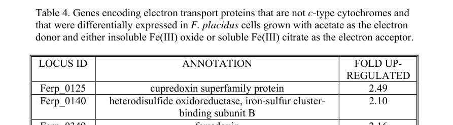

Ferp_0128 encodes a predicted archaeal nitrous-oxide reductase, EC 1.7.2.4. The protein belongs to the NosZ family and is predicted to catalyze nitrous oxide reduction to dinitrogen during anaerobic respiratory nitrogen oxide metabolism; literature directly maps Ferp_0128 to nosZ but does not provide purified-enzyme kinetics for the Ferroglobus protein.
| GO Term | Evidence | Action | Reason |
|---|---|---|---|
|
GO:0004129
cytochrome-c oxidase activity
|
IEA
GO_REF:0000002 |
REMOVE |
Summary: REMOVE. The specific assignment is nitrous-oxide reductase activity, not cytochrome-c oxidase activity.
Reason: The InterPro cytochrome c oxidase subunit II-like domain reflects the copper-binding domain architecture shared with NosZ-like enzymes, but the protein-level assignment is nitrous-oxide reductase EC 1.7.2.4. The specific GO:0050304 annotation is present and should be used instead. Family research confirms that PTHR42838 mixes NosZ and cytochrome c oxidase subunit II-like CuA proteins, making this exact over-annotation risk predictable.
Proposed replacements:
nitrous-oxide reductase activity
Supporting Evidence:
file:FERPA/Ferp_0128/Ferp_0128-uniprot.txt
RecName: Full=Nitrous-oxide reductase; EC=1.7.2.4.
file:interpro/panther/PTHR42838/PTHR42838-deep-research-falcon.md
PTHR42838 family research separates true NosZ/N2OR proteins from cytochrome c oxidase subunit II homologs, which share CuA-related sequence features but not catalytic function.
|
|
GO:0005507
copper ion binding
|
IEA
GO_REF:0000002 |
ACCEPT |
Summary: ACCEPT. Nitrous-oxide reductase is a copper enzyme.
Reason: NosZ enzymes are copper proteins, and the UniProt record annotates both copper binding and NosZ/cytochrome oxidase subunit II copper-binding domains for this sequence. Falcon supports a NosZ-family copper enzyme, but does not provide Ferp_0128-specific metal stoichiometry.
Supporting Evidence:
file:FERPA/Ferp_0128/Ferp_0128-uniprot.txt
Cytochrome oxidase subunit II copper A binding.
file:FERPA/Ferp_0128/Ferp_0128-deep-research-falcon.md
NosZ enzymes are multicopper reductases with CuA/CuZ centers; direct Ferp_0128 metal loading or kinetic measurements were not recovered.
|
|
GO:0016020
membrane
|
IEA
GO_REF:0000120 |
KEEP AS NON CORE |
Summary: KEEP_AS_NON_CORE. The enzyme is associated with respiratory envelope systems, but catalytic function and denitrification context are the core annotations.
Reason: Membrane association is plausible for a respiratory nitrous-oxide reductase system, but this broad CC term is less informative than the enzyme activity and pathway annotations. The local evidence does not require making membrane the core feature of Ferp_0128. Falcon also found that F. placidus is an exception to common clade II NosZ Sec-signal patterns, so exact export/localization should not be inferred from clade alone.
Supporting Evidence:
file:FERPA/Ferp_0128/Ferp_0128-uniprot.txt
GO; GO:0016020; C:membrane; IEA:InterPro.
file:FERPA/Ferp_0128/Ferp_0128-deep-research-falcon.md
Most clade II NosZ proteins have Sec-type signal motifs, but F. placidus was explicitly noted as an exception in the nosZ phylogeny.
|
|
GO:0050304
nitrous-oxide reductase activity
|
IEA
GO_REF:0000003 |
ACCEPT |
Summary: ACCEPT. This is the specific molecular function expected for NosZ-like nitrous-oxide reductase.
Reason: This is the precise EC-supported activity for the sequence. UniProt names the protein nitrous-oxide reductase, assigns EC 1.7.2.4, and places it in the NosZ family/PANTHER nitrous-oxide reductase subfamily. Falcon research found organism-specific literature explicitly referring to "nosZ; Ferp_0128", but the catalytic details are inferred from NosZ conservation rather than direct Ferp_0128 enzymology.
Supporting Evidence:
file:FERPA/Ferp_0128/Ferp_0128-uniprot.txt
RecName: Full=Nitrous-oxide reductase; EC=1.7.2.4.
file:FERPA/Ferp_0128/Ferp_0128-uniprot.txt
PANTHER; PTHR42838:SF2; NITROUS-OXIDE REDUCTASE.
file:interpro/panther/PTHR42838/PTHR42838-deep-research-falcon.md
True NosZ/N2OR proteins catalyze N2O reduction to N2; cytochrome c oxidase subunit II homologs are distinct CuA-containing electron-entry proteins.
file:FERPA/Ferp_0128/Ferp_0128-deep-research-falcon.md
Smith et al. explicitly identify nitrous oxide reductase as nosZ; Ferp_0128 in F. placidus DSM 10642, while no direct purification or kinetic assay for Ferp_0128 was recovered.
|
|
GO:1902600
proton transmembrane transport
|
IEA
GO_REF:0000108 |
UNDECIDED |
Summary: UNDECIDED. The protein is part of a respiratory process, but direct proton transmembrane transport by Ferp_0128 itself is not established by the local evidence.
Reason: Nitrous-oxide reduction is coupled to anaerobic respiration at the pathway level, but Ferp_0128 is annotated as the terminal reductase enzyme, not as a proton pump. The local evidence does not justify direct proton transmembrane transport for this gene product.
Supporting Evidence:
file:FERPA/Ferp_0128/Ferp_0128-uniprot.txt
Nitrous-oxide reductase is part of a bacterial respiratory chain that uses N2O as terminal electron acceptor.
|
|
GO:0019333
denitrification pathway
|
IEA
GO_REF:0000041 |
ACCEPT |
Summary: ACCEPT. Ferp_0128 is a nitrous-oxide reductase, the terminal enzymatic step of denitrification, so UniPathway adds useful pathway context in an archaeal species.
Reason: Unlike NorR regulatory examples, Ferp_0128 is predicted to catalyze the terminal denitrification reaction itself. The sequence belongs to the NosZ/nitrous-oxide reductase family and UniProt maps it to step 4/4 of nitrate reduction (denitrification). The strongest organism-specific evidence is locus identity and transcriptomic context, not an experiment demonstrating growth on N2O as terminal electron acceptor.
Supporting Evidence:
file:FERPA/Ferp_0128/Ferp_0128-uniprot.txt
PATHWAY: Nitrogen metabolism; nitrate reduction (denitrification); dinitrogen from nitrate: step 4/4.
file:FERPA/Ferp_0128/Ferp_0128-uniprot.txt
Belongs to the NosZ family.
file:interpro/panther/PTHR42838/PTHR42838-deep-research-falcon.md
NosZ/N2OR is the terminal N2O-to-N2 enzyme of denitrification; clade and genome context affect ecology, but not the core reaction.
file:FERPA/Ferp_0128/Ferp_0128-deep-research-falcon.md
Ferp_0128/nosZ was not differentially regulated between Fe(III) oxide and Fe(III) citrate conditions in Smith et al.; nearby Ferp_0125 was up-regulated, so Fe(III)-oxide induction should not be assigned to nosZ.
|
The research report should be a detailed narrative explaining the function, biological processes, and localization of the gene product. Citations should be given for all claims.
You should prioritize authoritative reviews and primary scientific literature when conducting research. You can supplement
this with annotations you find in gene/protein databases, but these can be outdated or inaccurate.
We are specifically interested in the primary function of the gene - for enzymes, what reaction is catalyzed, and what is the substrate specificity? For transporters, what is the substrate? For structural proteins or adapters, what is the broader structural role? For signaling molecules, what is the role in the pathway.
We are interested in where in or outside the cell the gene product carries out its function.
We are also interested in the signaling or biochemical pathways in which the gene functions. We are less interested in broad pleiotropic effects, except where these elucidate the precise role.
Include evidence where possible. We are interested in both experimental evidence as well as inference from structure, evolution, or bioinformatic analysis. Precise studies should be prioritized over high-throughput, where available.
The literature retrieved here explicitly links the ordered locus tag Ferp_0128 in Ferroglobus placidus strain AEDII12DO (DSM 10642) to nosZ (nitrous-oxide reductase), confirming that the target gene symbol and organism context match the UniProt-provided identity and avoiding symbol ambiguity. Smith et al. refer directly to “nitrous oxide reductase (nosZ; Ferp_0128)” while studying F. placidus DSM 10642 under anaerobic Fe(III)-respiring conditions. (smith2015mechanismsinvolvedin pages 1-5, smith2015mechanismsinvolvedin pages 13-17)
Nitrous-oxide reductase (NosZ; EC 1.7.2.4) is the canonical enzyme responsible for the biological reduction of nitrous oxide (N2O) to dinitrogen (N2), representing a key biological sink for N2O and typically the terminal step of denitrification. (schacksen2025genomicsforanalysis pages 31-33)
NosZ is widely described as an extracytoplasmic/periplasm-facing homodimeric copper metalloprotein whose monomers contain two copper centers: CuA, functioning primarily in electron transfer, and CuZ, the catalytic center where N2O reduction occurs. (schacksen2025genomicsforanalysis pages 31-33, leigh2025transcriptionalregulationofa pages 23-25)
Comparative phylogenetic analyses commonly divide nosZ into two major clades (often called clade I and clade II), which differ in typical protein export routes and gene-cluster organization. In one synthesis, clade I NosZ is described as commonly Tat-exported and associated with nosR, whereas clade II is described as commonly Sec-exported and associated with other membrane/cluster genes. (schacksen2025genomicsforanalysis pages 31-33)
A detailed nosZ phylogeny focusing on “unaccounted” N2O reducers found that most clade II nosZ genes encode a Sec-type signal motif, but explicitly reports that nosZ sequences from the hyperthermophilic archaeon Ferroglobus placidus are an exception to that pattern. This means that signal peptide/export predictions for Ferp_0128 should not be assumed from clade-level generalizations alone, and should be checked directly in the Ferp_0128 sequence if a high-confidence compartment assignment is needed. (jones2013theunaccountedyet pages 3-4)
Electron delivery to NosZ can involve dedicated respiratory chains; for example, one reviewed nos gene cluster encodes an “unusual” pathway leading to a cytochrome c-linked nitrous oxide reductase, demonstrating that cytochrome c can function as a partner in some organisms. (deus2024caracterizaçãobioquímicada pages 79-82)
In F. placidus, Ferp_0128 (nosZ) is discussed in the context of a genomic region that includes other redox-related proteins. Smith et al. describe a cupredoxin-superfamily gene (Ferp_0125) as being divergently oriented relative to a nitrous oxide reductase operon, and note that the nitrous oxide reductase operon product “also contains a cupredoxin domain.” (smith2015mechanismsinvolvedin pages 13-17)
This is consistent with the broadly conserved multicopper / cupredoxin-like architecture expected of NosZ proteins and supports the UniProt-based inference that D3S180 is a NosZ-family enzyme, even though the retrieved literature does not provide a full Ferp_0128 domain map or a structure for this archaeal protein. (smith2015mechanismsinvolvedin pages 13-17, schacksen2025genomicsforanalysis pages 31-33)
The most directly Ferp_0128-specific expression evidence retrieved comes from Smith et al. (2015), who profiled F. placidus gene expression during anaerobic growth with acetate as electron donor and either Fe(III) oxide or Fe(III) citrate as electron acceptor. In this study, nosZ (Ferp_0128) was not differentially regulated between Fe(III) oxide and Fe(III) citrate conditions. (smith2015mechanismsinvolvedin pages 13-17)
In contrast, a neighboring electron-transport-related cupredoxin superfamily protein gene Ferp_0125 was reported as significantly up-regulated (2.49-fold) during growth on Fe(III) oxide (relative to Fe(III) citrate), as shown in Table 4 of the paper; Ferp_0128 (nosZ) was not included among differentially expressed genes. (smith2015mechanismsinvolvedin media 9afa03cc, smith2015mechanismsinvolvedin pages 13-17)
Interpretation for functional annotation: the transcriptomic evidence supports that Ferp_0128 is present and expressed in F. placidus, but does not support a role as a specifically Fe(III)-oxide-induced component of the Fe(III) respiration response under the tested conditions. (smith2015mechanismsinvolvedin pages 13-17, smith2015mechanismsinvolvedin media 9afa03cc)
Because Ferp_0128 is annotated as nosZ, the best-supported primary function is reduction of N2O to N2 in an extracytoplasmic compartment as part of energy metabolism or N-oxide detoxification/respiration, consistent with nosZ biology and clade-based patterns. (smith2015mechanismsinvolvedin pages 13-17, schacksen2025genomicsforanalysis pages 31-33, jones2013theunaccountedyet pages 3-4)
However, the retrieved corpus does not include direct biochemical purification/kinetics for F. placidus NosZ, nor does it provide culture experiments demonstrating growth of F. placidus with N2O as the terminal electron acceptor. Therefore, substrate specificity and catalytic parameters for Ferp_0128 remain inferred from NosZ family conservation rather than demonstrated for this exact enzyme in the provided evidence set. (smith2015mechanismsinvolvedin pages 13-17, schacksen2025genomicsforanalysis pages 31-33)
A long-term engineered-system study used gas-permeable membrane biofilm reactors supplied with exogenous N2O for 1200 days to enrich N2O-reducing bacteria in an anammox biofilm context. The authors report increased N2O sink potential and identify clade II nosZ organisms as major protagonists; clade II nosZ types were reported as “consistently one order of magnitude and three-fold more abundant than clade I” in their reactors. (Oba et al., 2024-03-29, Microbes and Environments, https://doi.org/10.1264/jsme2.me23106) (oba2024questfornitrous pages 1-2, oba2024questfornitrous pages 8-10)
This work is relevant to Ferp_0128 annotation because it highlights how clade II-type NosZ systems can dominate N2O sink function in biofilms, and reinforces that nosZ presence can indicate strong N2O-consumption capacity even in complex consortia rather than only in “complete denitrifiers.” (oba2024questfornitrous pages 1-2, oba2024questfornitrous pages 8-10)
A 2023 study characterized strong N2O reduction in Bradyrhizobium ottawaense, attributing performance to unusually high nosZ expression and demonstrating experimental designs relevant to bioaugmentation and soil N2O flux measurement (including high-density inoculation and gas-flux assays). (Wasai-Hara et al., 2023-11-10, Scientific Reports, https://doi.org/10.1038/s41598-023-46019-w) (wasaihara2023bradyrhizobiumottawaenseefficiently pages 8-9)
A 2024 Nature commentary highlights growing interest in leveraging N2O-consuming microorganisms as a mitigation “sink,” including the potential of adding (bioaugmenting) effective N2O reducers to soils. (He & Löffler, 2024-05-16, Nature, https://doi.org/10.1038/d41586-024-01363-3) (oba2024questfornitrous pages 1-2)
A 2024 Earth-system modeling study assessed agricultural N2O mitigation via combined interventions. It estimates a sustained 1.35 Tg N2O yr−1 reduction (≈5% of 2020 emissions), and reports that the combined radiative forcing effect (from N2O and CO2 co-benefits) could be equivalent to 9–11 ppm CO2 removal by 2075 under modeled scenarios. (Weber et al., 2024-06-17, npj Climate and Atmospheric Science, https://doi.org/10.1038/s41612-024-00678-2) (weber2024globalagriculturaln2o pages 1-2)
A 2024 genome-trait resource integrated 62,624 microbial genomes (including 866 archaea) and used gene presence/absence rules to categorize denitrification potential. In this dataset, nosZ corresponds to “nitrous-oxide reductase” and was found in 8190 genomes that possess the “nitrous oxide reduction trait,” illustrating the wide distribution of N2O reduction potential beyond classical denitrifiers. (Isokpehi et al., 2024-04-11, Microorganisms, https://doi.org/10.3390/microorganisms12040791) (isokpehi2024ecologicaltraitbaseddigital pages 7-10)
The membrane-biofilm reactor enrichment strategy in Oba et al. demonstrates a real-world-relevant approach: supplying N2O directly (bubbleless) to biofilms can enrich nosZ-bearing N2O reducers and increase N2O sink potential in systems related to nitrogen removal (anammox-associated consortia). (oba2024questfornitrous pages 1-2, oba2024questfornitrous pages 8-10)
The Bradyrhizobium work provides a detailed experimental framework for evaluating N2O reduction and nosZ expression under soil-relevant conditions (seed inoculation, nodule decomposition incubations, headspace N2O monitoring), supporting the feasibility of screening and deploying high-performing nosZ-expressing strains to reduce N2O fluxes. (wasaihara2023bradyrhizobiumottawaenseefficiently pages 8-9)
The following table consolidates the verified identity, inferred function, and evidence strength for Ferp_0128/D3S180.
| Category | Finding for Ferroglobus placidus Ferp_0128 / UniProt D3S180 | Evidence / citation |
|---|---|---|
| Identifier verification | Ferp_0128 maps to a predicted nitrous-oxide reductase (NosZ) in Ferroglobus placidus strain DSM 10642 / AEDII12DO; this matches the organism and locus context used in the F. placidus literature. | Smith et al. studied F. placidus strain AEDII12DO (DSM 10642) and explicitly refer to nosZ; Ferp_0128 in this organism (smith2015mechanismsinvolvedin pages 1-5, smith2015mechanismsinvolvedin pages 13-17) |
| Predicted primary function | Predicted enzyme: nitrous-oxide reductase / N2O reductase (NosZ), the terminal enzyme of denitrification that reduces N2O to N2; UniProt assigns EC 1.7.2.4. | General denitrification role of NosZ in prokaryotes and archaea is reviewed in archaeal nitrogen-cycle literature (cabello2004nitratereductionand pages 1-2); large genome-based denitrification resource also lists nosZ = nitrous-oxide reductase (isokpehi2024ecologicaltraitbaseddigital pages 7-10) |
| Reaction / substrate specificity | Expected catalytic reaction: N2O + 2 e− + 2 H+ → N2 + H2O; substrate specificity is nitrous oxide as terminal electron acceptor. | NosZ is the enzyme responsible for microbial nitrous oxide reduction to nitrogen gas in denitrification (cabello2004nitratereductionand pages 1-2, schacksen2025genomicsforanalysis pages 31-33) |
| Protein family / domains | Functional annotation is consistent with a canonical/atypical NosZ multicopper oxidoreductase architecture, including N2OR N/C regions and cupredoxin-related domains; Jones et al. note that the F. placidus nosZ belongs to the broad clade II lineage, and Smith et al. note the nitrous-oxide reductase operon product contains a cupredoxin domain. | nosZ phylogeny and clade assignment discussed for F. placidus in Jones et al. (jones2013theunaccountedyet pages 3-4); Smith et al. mention the nitrous oxide reductase operon product “also contains a cupredoxin domain” (smith2015mechanismsinvolvedin pages 13-17) |
| Export / localization evidence | NosZ proteins are generally extracytoplasmic/periplasm-facing enzymes. For most clade II nosZ, Jones et al. found a Sec signal recognition motif, but they specifically note Ferroglobus placidus is an exception, so the export route for Ferp_0128 is not securely assigned from that survey alone. | Clade II nosZ usually encoded a Sec signal motif, “with the exception of … Ferroglobus placidus” (jones2013theunaccountedyet pages 3-4); general NosZ localization in archaea/prokaryotes is periplasmic/extracytoplasmic (cabello2004nitratereductionand pages 1-2, schacksen2025genomicsforanalysis pages 31-33) |
| Physiological pathway context | Ferp_0128 most plausibly functions in N2O reduction / denitrification and therefore could contribute to an N2O sink phenotype, even if the organism lacks evidence here for a fully conventional denitrification chain in the cited sources. | NosZ marks the nitrous oxide reduction trait in comparative genome analyses (isokpehi2024ecologicaltraitbaseddigital pages 7-10); Jones et al. frame noncanonical/clade II nosZ organisms as part of an underappreciated N2O-reducing community (jones2013theunaccountedyet pages 3-4) |
| Archaeal context | Archaeal nosZ genes are sufficiently conserved that archaeal-specific nosZ primers were designed and experimentally validated using archaeal references that include F. placidus. | Rusch 2013 reports archaeal nosZ primer design/evaluation and includes archaeal nosZ references including F. placidus (rusch2013moleculartoolsfor pages 3-4) |
| Relationship to Fe(III) respiration study | In the major F. placidus Fe(III)-respiration transcriptomics study, Ferp_0128 is discussed only indirectly in the context of neighboring redox genes; there is no direct evidence from that study that NosZ is a Fe(III)-reduction protein. | Smith et al. focused on Fe(III) respiration mechanisms and c-type cytochromes rather than validating NosZ biochemistry in F. placidus (smith2015mechanismsinvolvedin pages 1-5, smith2015mechanismsinvolvedin pages 5-9, smith2015mechanismsinvolvedin pages 9-13) |
| Expression / regulation in Smith 2015 | Ferp_0128 (nosZ) was not differentially regulated between growth on Fe(III) oxide and Fe(III) citrate. However, a nearby cupredoxin superfamily gene, Ferp_0125, divergently transcribed from the nitrous-oxide reductase operon, was upregulated during growth on Fe(III) oxide. | Smith et al. explicitly state “nitrous oxide reductase (nosZ; Ferp_0128) was not differentially regulated” and that nearby Ferp_0125 was upregulated (smith2015mechanismsinvolvedin pages 13-17) |
| Strength of evidence | Moderate-confidence functional inference, limited gene-specific experimentation. Identity is supported by organism/locus mapping and comparative NosZ biology, but direct biochemical characterization of Ferp_0128 itself in F. placidus appears limited in the retrieved literature. | Combined organism-specific and comparative evidence (jones2013theunaccountedyet pages 3-4, cabello2004nitratereductionand pages 1-2, smith2015mechanismsinvolvedin pages 1-5, smith2015mechanismsinvolvedin pages 13-17) |
| Key source URLs / dates | Smith et al., Applied and Environmental Microbiology (2015-04), DOI: https://doi.org/10.1128/AEM.04038-14 ; Jones et al., ISME Journal (2013-02 issue; online 2012-11), DOI: https://doi.org/10.1038/ismej.2012.125 ; Cabello et al., Microbiology (2004-11), DOI: https://doi.org/10.1099/mic.0.27303-0 ; Rusch, Archaea (2013-01), DOI: https://doi.org/10.1155/2013/676450 ; Isokpehi et al., Microorganisms (2024-04), DOI: https://doi.org/10.3390/microorganisms12040791 | Source metadata from retrieved papers (jones2013theunaccountedyet pages 3-4, isokpehi2024ecologicaltraitbaseddigital pages 7-10, cabello2004nitratereductionand pages 1-2, smith2015mechanismsinvolvedin pages 1-5, rusch2013moleculartoolsfor pages 3-4, smith2015mechanismsinvolvedin pages 13-17) |
Table: This table summarizes the verified identity, predicted function, domain architecture, localization evidence, physiological context, and expression data for Ferroglobus placidus Ferp_0128 (UniProt D3S180). It emphasizes where evidence is direct versus inferred from broader NosZ biology.
Smith et al. Table 4 visually documents differential expression of electron-transport proteins under Fe(III) oxide vs citrate and includes Ferp_0125 (cupredoxin) as upregulated, consistent with the text that Ferp_0128/nosZ is not differentially regulated in this comparison. (smith2015mechanismsinvolvedin media 9afa03cc)
References
(smith2015mechanismsinvolvedin pages 1-5): Jessica A. Smith, Muktak Aklujkar, Carla Risso, Ching Leang, Ludovic Giloteaux, and Dawn E. Holmes. Mechanisms involved in fe(iii) respiration by the hyperthermophilic archaeon ferroglobus placidus. Applied and Environmental Microbiology, 81:2735-2744, Apr 2015. URL: https://doi.org/10.1128/aem.04038-14, doi:10.1128/aem.04038-14. This article has 51 citations and is from a peer-reviewed journal.
(smith2015mechanismsinvolvedin pages 13-17): Jessica A. Smith, Muktak Aklujkar, Carla Risso, Ching Leang, Ludovic Giloteaux, and Dawn E. Holmes. Mechanisms involved in fe(iii) respiration by the hyperthermophilic archaeon ferroglobus placidus. Applied and Environmental Microbiology, 81:2735-2744, Apr 2015. URL: https://doi.org/10.1128/aem.04038-14, doi:10.1128/aem.04038-14. This article has 51 citations and is from a peer-reviewed journal.
(schacksen2025genomicsforanalysis pages 31-33): P Schacksen, SK Østergaard, and MH Eskildsen. Genomics for analysis of complex microbial communities exemplified by the nitrogen cycle. ArXiv, 2025. URL: https://doi.org/10.54337/aau779423700, doi:10.54337/aau779423700. This article has 0 citations.
(leigh2025transcriptionalregulationofa pages 23-25): T Leigh. Transcriptional regulation of bacterial nitrous oxide emissions. Unknown journal, 2025.
(jones2013theunaccountedyet pages 3-4): Christopher M Jones, Daniel R H Graf, David Bru, Laurent Philippot, and Sara Hallin. The unaccounted yet abundant nitrous oxide-reducing microbial community: a potential nitrous oxide sink. The ISME Journal, 7:417-426, Nov 2013. URL: https://doi.org/10.1038/ismej.2012.125, doi:10.1038/ismej.2012.125. This article has 832 citations.
(deus2024caracterizaçãobioquímicada pages 79-82): MPGM de Deus. Caracterização bioquímica da apbe recombinante de marinobacter nauticus. Unknown journal, 2024.
(smith2015mechanismsinvolvedin media 9afa03cc): Jessica A. Smith, Muktak Aklujkar, Carla Risso, Ching Leang, Ludovic Giloteaux, and Dawn E. Holmes. Mechanisms involved in fe(iii) respiration by the hyperthermophilic archaeon ferroglobus placidus. Applied and Environmental Microbiology, 81:2735-2744, Apr 2015. URL: https://doi.org/10.1128/aem.04038-14, doi:10.1128/aem.04038-14. This article has 51 citations and is from a peer-reviewed journal.
(oba2024questfornitrous pages 1-2): Kohei Oba, Toshikazu Suenaga, Shohei Yasuda, Megumi Kuroiwa, Tomoyuki Hori, Susanne Lackner, and Akihiko Terada. Quest for nitrous oxide-reducing bacteria present in an anammox biofilm fed with nitrous oxide. Microbes and Environments, 39:n/a, Mar 2024. URL: https://doi.org/10.1264/jsme2.me23106, doi:10.1264/jsme2.me23106. This article has 14 citations and is from a peer-reviewed journal.
(oba2024questfornitrous pages 8-10): Kohei Oba, Toshikazu Suenaga, Shohei Yasuda, Megumi Kuroiwa, Tomoyuki Hori, Susanne Lackner, and Akihiko Terada. Quest for nitrous oxide-reducing bacteria present in an anammox biofilm fed with nitrous oxide. Microbes and Environments, 39:n/a, Mar 2024. URL: https://doi.org/10.1264/jsme2.me23106, doi:10.1264/jsme2.me23106. This article has 14 citations and is from a peer-reviewed journal.
(wasaihara2023bradyrhizobiumottawaenseefficiently pages 8-9): Sawa Wasai-Hara, Manabu Itakura, Arthur Fernandes Siqueira, Daisaku Takemoto, Masayuki Sugawara, Hisayuki Mitsui, Shusei Sato, Noritoshi Inagaki, Toshimasa Yamazaki, Haruko Imaizumi-Anraku, Yoshikazu Shimoda, and Kiwamu Minamisawa. Bradyrhizobium ottawaense efficiently reduces nitrous oxide through high nosz gene expression. Scientific Reports, Nov 2023. URL: https://doi.org/10.1038/s41598-023-46019-w, doi:10.1038/s41598-023-46019-w. This article has 39 citations and is from a peer-reviewed journal.
(weber2024globalagriculturaln2o pages 1-2): James Weber, James Keeble, Nathan Luke Abraham, David J. Beerling, and Maria Val Martin. Global agricultural n2o emission reduction strategies deliver climate benefits with minimal impact on stratospheric o3 recovery. npj Climate and Atmospheric Science, Jun 2024. URL: https://doi.org/10.1038/s41612-024-00678-2, doi:10.1038/s41612-024-00678-2. This article has 20 citations and is from a domain leading peer-reviewed journal.
(isokpehi2024ecologicaltraitbaseddigital pages 7-10): Raphael D. Isokpehi, Yungkul Kim, Sarah E. Krejci, and Vishwa D. Trivedi. Ecological trait-based digital categorization of microbial genomes for denitrification potential. Microorganisms, 12:791, Apr 2024. URL: https://doi.org/10.3390/microorganisms12040791, doi:10.3390/microorganisms12040791. This article has 4 citations.
(cabello2004nitratereductionand pages 1-2): Purificación Cabello, M. Dolores Roldán, and Conrado Moreno-Vivián. Nitrate reduction and the nitrogen cycle in archaea. Microbiology, 150 Pt 11:3527-46, Nov 2004. URL: https://doi.org/10.1099/mic.0.27303-0, doi:10.1099/mic.0.27303-0. This article has 477 citations and is from a peer-reviewed journal.
(rusch2013moleculartoolsfor pages 3-4): Antje Rusch. Molecular tools for the detection of nitrogen cycling archaea. Archaea, 2013:1-10, Jan 2013. URL: https://doi.org/10.1155/2013/676450, doi:10.1155/2013/676450. This article has 21 citations.
(smith2015mechanismsinvolvedin pages 5-9): Jessica A. Smith, Muktak Aklujkar, Carla Risso, Ching Leang, Ludovic Giloteaux, and Dawn E. Holmes. Mechanisms involved in fe(iii) respiration by the hyperthermophilic archaeon ferroglobus placidus. Applied and Environmental Microbiology, 81:2735-2744, Apr 2015. URL: https://doi.org/10.1128/aem.04038-14, doi:10.1128/aem.04038-14. This article has 51 citations and is from a peer-reviewed journal.
(smith2015mechanismsinvolvedin pages 9-13): Jessica A. Smith, Muktak Aklujkar, Carla Risso, Ching Leang, Ludovic Giloteaux, and Dawn E. Holmes. Mechanisms involved in fe(iii) respiration by the hyperthermophilic archaeon ferroglobus placidus. Applied and Environmental Microbiology, 81:2735-2744, Apr 2015. URL: https://doi.org/10.1128/aem.04038-14, doi:10.1128/aem.04038-14. This article has 51 citations and is from a peer-reviewed journal.

id: D3S180
gene_symbol: Ferp_0128
product_type: PROTEIN
status: DRAFT
taxon:
id: NCBITaxon:589924
label: Ferroglobus placidus (strain DSM 10642 / AEDII12DO)
description: >-
Ferp_0128 encodes a predicted archaeal nitrous-oxide reductase, EC 1.7.2.4.
The protein belongs to the NosZ family and is predicted to catalyze nitrous
oxide reduction to dinitrogen during anaerobic respiratory nitrogen oxide
metabolism; literature directly maps Ferp_0128 to nosZ but does not provide
purified-enzyme kinetics for the Ferroglobus protein.
existing_annotations:
- term:
id: GO:0004129
label: cytochrome-c oxidase activity
evidence_type: IEA
original_reference_id: GO_REF:0000002
review:
summary: >-
REMOVE. The specific assignment is nitrous-oxide reductase activity, not
cytochrome-c oxidase activity.
action: REMOVE
reason: >-
The InterPro cytochrome c oxidase subunit II-like domain reflects the
copper-binding domain architecture shared with NosZ-like enzymes, but the
protein-level assignment is nitrous-oxide reductase EC 1.7.2.4. The
specific GO:0050304 annotation is present and should be used instead.
Family research confirms that PTHR42838 mixes NosZ and cytochrome c
oxidase subunit II-like CuA proteins, making this exact over-annotation
risk predictable.
proposed_replacement_terms:
- id: GO:0050304
label: nitrous-oxide reductase activity
supported_by:
- reference_id: file:FERPA/Ferp_0128/Ferp_0128-uniprot.txt
supporting_text: 'RecName: Full=Nitrous-oxide reductase; EC=1.7.2.4.'
- reference_id: file:interpro/panther/PTHR42838/PTHR42838-deep-research-falcon.md
supporting_text: >-
PTHR42838 family research separates true NosZ/N2OR proteins from
cytochrome c oxidase subunit II homologs, which share CuA-related
sequence features but not catalytic function.
- term:
id: GO:0005507
label: copper ion binding
evidence_type: IEA
original_reference_id: GO_REF:0000002
review:
summary: >-
ACCEPT. Nitrous-oxide reductase is a copper enzyme.
action: ACCEPT
reason: >-
NosZ enzymes are copper proteins, and the UniProt record annotates both
copper binding and NosZ/cytochrome oxidase subunit II copper-binding
domains for this sequence. Falcon supports a NosZ-family copper enzyme,
but does not provide Ferp_0128-specific metal stoichiometry.
supported_by:
- reference_id: file:FERPA/Ferp_0128/Ferp_0128-uniprot.txt
supporting_text: Cytochrome oxidase subunit II copper A binding.
- reference_id: file:FERPA/Ferp_0128/Ferp_0128-deep-research-falcon.md
supporting_text: >-
NosZ enzymes are multicopper reductases with CuA/CuZ centers; direct
Ferp_0128 metal loading or kinetic measurements were not recovered.
- term:
id: GO:0016020
label: membrane
evidence_type: IEA
original_reference_id: GO_REF:0000120
review:
summary: >-
KEEP_AS_NON_CORE. The enzyme is associated with respiratory envelope
systems, but catalytic function and denitrification context are the core
annotations.
action: KEEP_AS_NON_CORE
reason: >-
Membrane association is plausible for a respiratory nitrous-oxide
reductase system, but this broad CC term is less informative than the
enzyme activity and pathway annotations. The local evidence does not
require making membrane the core feature of Ferp_0128. Falcon also found
that F. placidus is an exception to common clade II NosZ Sec-signal
patterns, so exact export/localization should not be inferred from clade
alone.
supported_by:
- reference_id: file:FERPA/Ferp_0128/Ferp_0128-uniprot.txt
supporting_text: 'GO; GO:0016020; C:membrane; IEA:InterPro.'
- reference_id: file:FERPA/Ferp_0128/Ferp_0128-deep-research-falcon.md
supporting_text: >-
Most clade II NosZ proteins have Sec-type signal motifs, but F.
placidus was explicitly noted as an exception in the nosZ phylogeny.
- term:
id: GO:0050304
label: nitrous-oxide reductase activity
evidence_type: IEA
original_reference_id: GO_REF:0000003
review:
summary: >-
ACCEPT. This is the specific molecular function expected for NosZ-like
nitrous-oxide reductase.
action: ACCEPT
reason: >-
This is the precise EC-supported activity for the sequence. UniProt names
the protein nitrous-oxide reductase, assigns EC 1.7.2.4, and places it in
the NosZ family/PANTHER nitrous-oxide reductase subfamily. Falcon
research found organism-specific literature explicitly referring to
"nosZ; Ferp_0128", but the catalytic details are inferred from NosZ
conservation rather than direct Ferp_0128 enzymology.
supported_by:
- reference_id: file:FERPA/Ferp_0128/Ferp_0128-uniprot.txt
supporting_text: 'RecName: Full=Nitrous-oxide reductase; EC=1.7.2.4.'
- reference_id: file:FERPA/Ferp_0128/Ferp_0128-uniprot.txt
supporting_text: 'PANTHER; PTHR42838:SF2; NITROUS-OXIDE REDUCTASE.'
- reference_id: file:interpro/panther/PTHR42838/PTHR42838-deep-research-falcon.md
supporting_text: >-
True NosZ/N2OR proteins catalyze N2O reduction to N2; cytochrome c
oxidase subunit II homologs are distinct CuA-containing electron-entry
proteins.
- reference_id: file:FERPA/Ferp_0128/Ferp_0128-deep-research-falcon.md
supporting_text: >-
Smith et al. explicitly identify nitrous oxide reductase as nosZ;
Ferp_0128 in F. placidus DSM 10642, while no direct purification or
kinetic assay for Ferp_0128 was recovered.
- term:
id: GO:1902600
label: proton transmembrane transport
evidence_type: IEA
original_reference_id: GO_REF:0000108
review:
summary: >-
UNDECIDED. The protein is part of a respiratory process, but direct proton
transmembrane transport by Ferp_0128 itself is not established by the
local evidence.
action: UNDECIDED
reason: >-
Nitrous-oxide reduction is coupled to anaerobic respiration at the pathway
level, but Ferp_0128 is annotated as the terminal reductase enzyme, not as
a proton pump. The local evidence does not justify direct proton
transmembrane transport for this gene product.
supported_by:
- reference_id: file:FERPA/Ferp_0128/Ferp_0128-uniprot.txt
supporting_text: Nitrous-oxide reductase is part of a bacterial respiratory chain that uses N2O as terminal electron acceptor.
- term:
id: GO:0019333
label: denitrification pathway
evidence_type: IEA
original_reference_id: GO_REF:0000041
review:
summary: >-
ACCEPT. Ferp_0128 is a nitrous-oxide reductase, the terminal enzymatic
step of denitrification, so UniPathway adds useful pathway context in an
archaeal species.
action: ACCEPT
reason: >-
Unlike NorR regulatory examples, Ferp_0128 is predicted to catalyze the
terminal denitrification reaction itself. The sequence belongs to the
NosZ/nitrous-oxide reductase family and UniProt maps it to step 4/4 of
nitrate reduction (denitrification). The strongest organism-specific
evidence is locus identity and transcriptomic context, not an experiment
demonstrating growth on N2O as terminal electron acceptor.
supported_by:
- reference_id: file:FERPA/Ferp_0128/Ferp_0128-uniprot.txt
supporting_text: 'PATHWAY: Nitrogen metabolism; nitrate reduction (denitrification); dinitrogen from nitrate: step 4/4.'
- reference_id: file:FERPA/Ferp_0128/Ferp_0128-uniprot.txt
supporting_text: Belongs to the NosZ family.
- reference_id: file:interpro/panther/PTHR42838/PTHR42838-deep-research-falcon.md
supporting_text: >-
NosZ/N2OR is the terminal N2O-to-N2 enzyme of denitrification; clade
and genome context affect ecology, but not the core reaction.
- reference_id: file:FERPA/Ferp_0128/Ferp_0128-deep-research-falcon.md
supporting_text: >-
Ferp_0128/nosZ was not differentially regulated between Fe(III) oxide
and Fe(III) citrate conditions in Smith et al.; nearby Ferp_0125 was
up-regulated, so Fe(III)-oxide induction should not be assigned to nosZ.
references:
- id: GO_REF:0000002
title: Gene Ontology annotation through association of InterPro records with GO terms
findings: []
- id: GO_REF:0000003
title: Gene Ontology annotation based on Enzyme Commission mapping
findings: []
- id: GO_REF:0000041
title: Gene Ontology annotation based on UniPathway vocabulary mapping
findings: []
- id: GO_REF:0000108
title: Automatic assignment of GO terms using logical inference
findings: []
- id: GO_REF:0000120
title: Combined Automated Annotation using Multiple IEA Methods
findings: []
- id: file:FERPA/Ferp_0128/Ferp_0128-uniprot.txt
title: UniProt record for Ferp_0128
findings:
- statement: >-
UniProt names D3S180 as nitrous-oxide reductase, EC 1.7.2.4, and lists
denitrification pathway context.
- id: file:interpro/panther/PTHR42838/PTHR42838-deep-research-falcon.md
title: Falcon family deep research for PTHR42838 NosZ/cytochrome c oxidase subunit II
findings:
- statement: >-
Family research found that PTHR42838 contains both true NosZ/N2OR and
cytochrome c oxidase subunit II-like CuA proteins; Ferp_0128 is kept as
NosZ because the UniProt EC and PANTHER subfamily identify nitrous-oxide
reductase specifically.
- id: file:FERPA/Ferp_0128/Ferp_0128-deep-research-falcon.md
title: Falcon deep research for Ferp_0128
findings:
- statement: >-
Falcon deep research for Ferp_0128 directly verifies the locus as nosZ in
Ferroglobus placidus DSM 10642. It supports NosZ-family N2O-to-N2
reductase function while noting no direct purification/kinetics, no
evidence that nosZ is Fe(III)-oxide-induced, and uncertainty about the
export route because F. placidus is an exception to common clade II
Sec-signal patterns.
core_functions:
- description: >-
Catalyzes nitrous oxide reduction as an archaeal nitrous-oxide reductase in
the denitrification pathway.
molecular_function:
id: GO:0050304
label: nitrous-oxide reductase activity
directly_involved_in:
- id: GO:0019333
label: denitrification pathway
supported_by:
- reference_id: file:FERPA/Ferp_0128/Ferp_0128-uniprot.txt
supporting_text: >-
RecName: Full=Nitrous-oxide reductase; EC=1.7.2.4. PATHWAY: Nitrogen
metabolism; nitrate reduction (denitrification).
- reference_id: file:interpro/panther/PTHR42838/PTHR42838-deep-research-falcon.md
supporting_text: >-
The NosZ/N2OR group catalyzes terminal nitrous oxide reduction to
dinitrogen; the cytochrome c oxidase-like annotations are family-domain
spillover rather than the core function here.
- reference_id: file:FERPA/Ferp_0128/Ferp_0128-deep-research-falcon.md
supporting_text: >-
Falcon deep research supports Ferp_0128 as a NosZ-family nitrous-oxide
reductase with direct locus-name support from Smith et al.; it keeps
proton transport and exact export/localization unresolved because those
details were not established for this archaeal protein.
{kind=link}